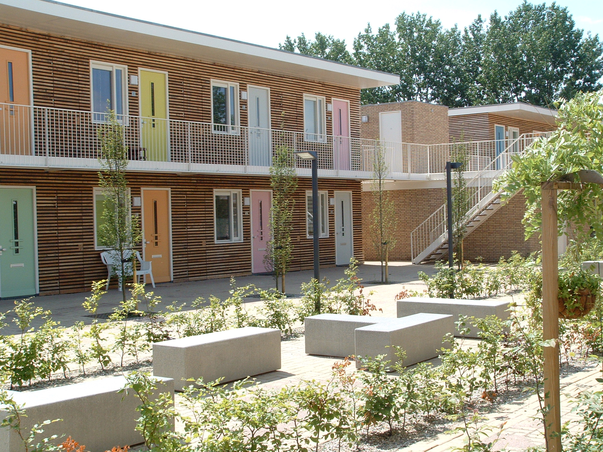
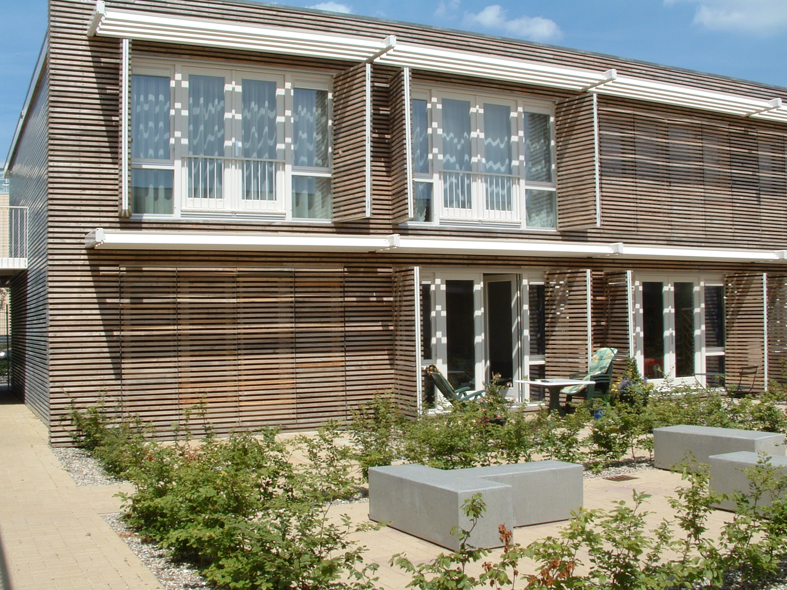
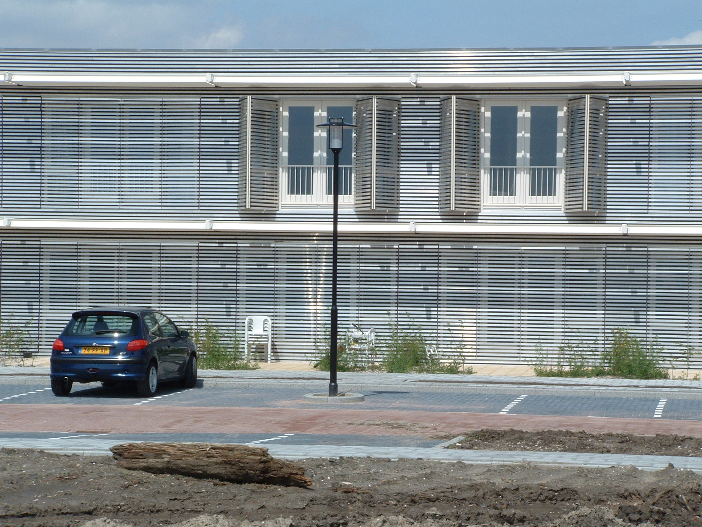
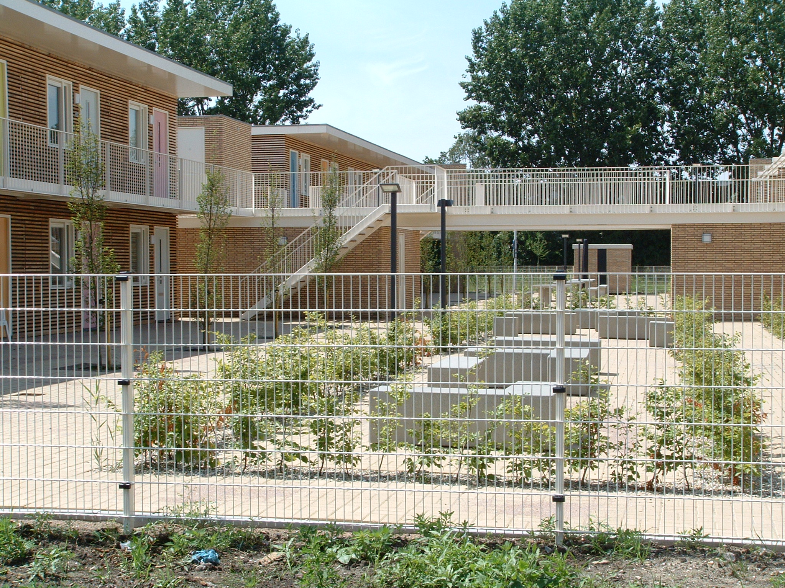
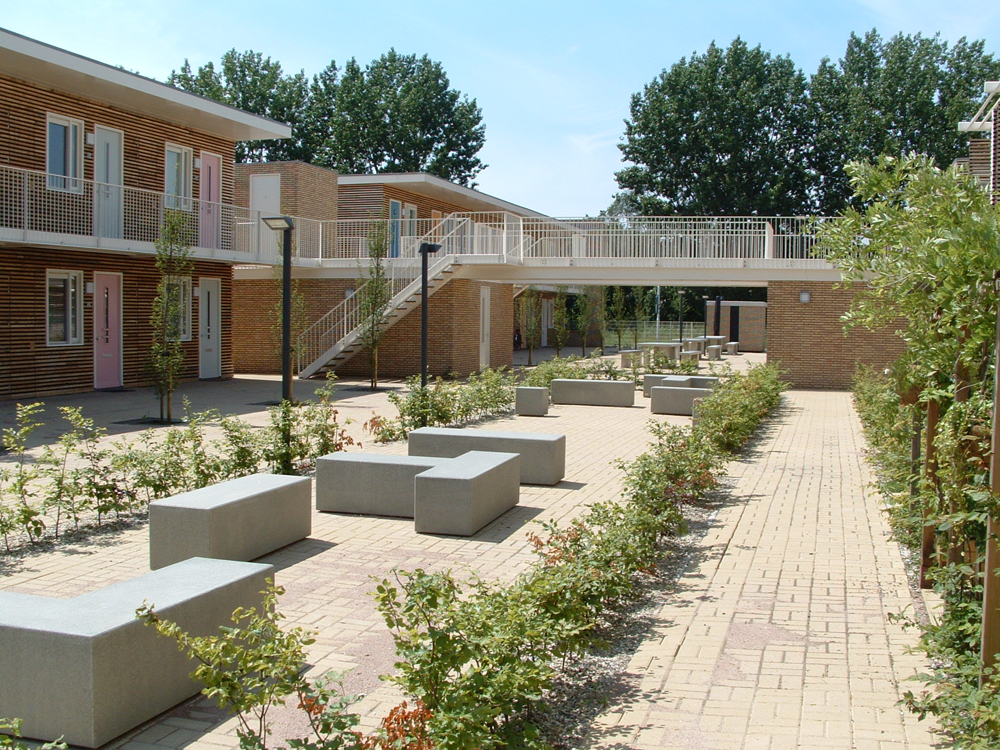
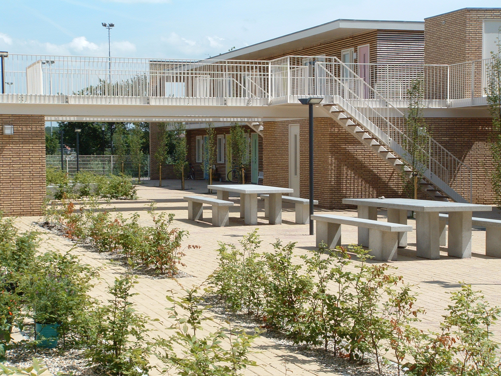
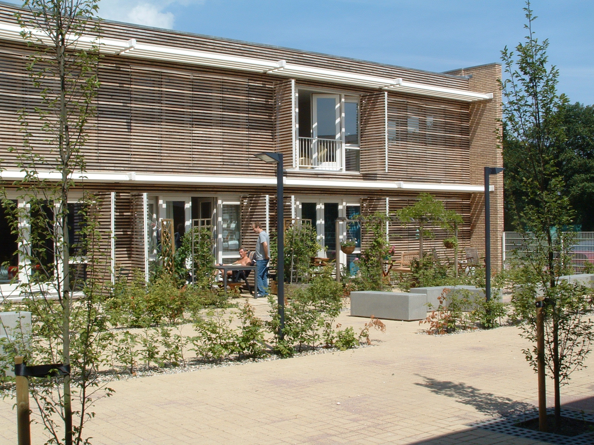
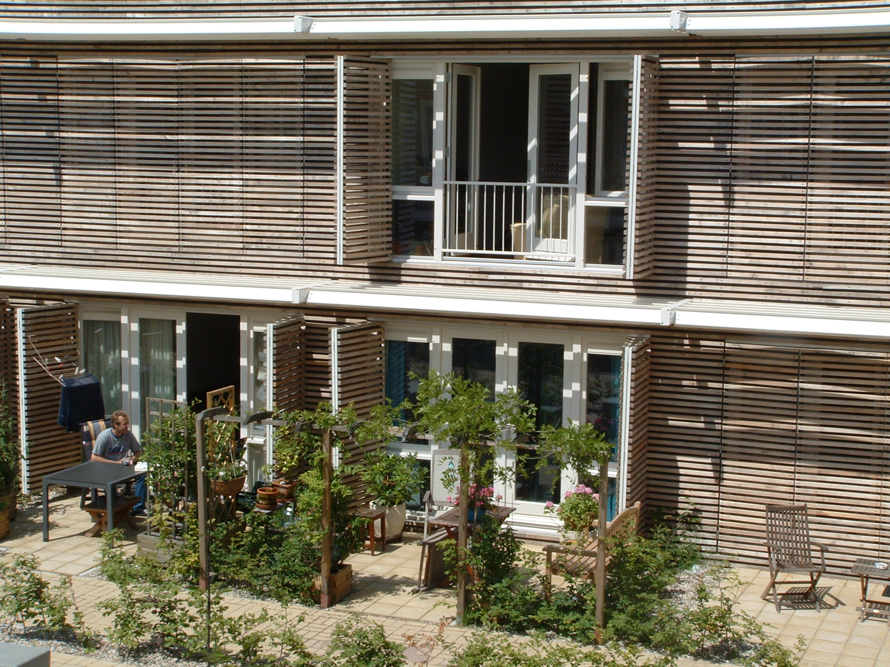
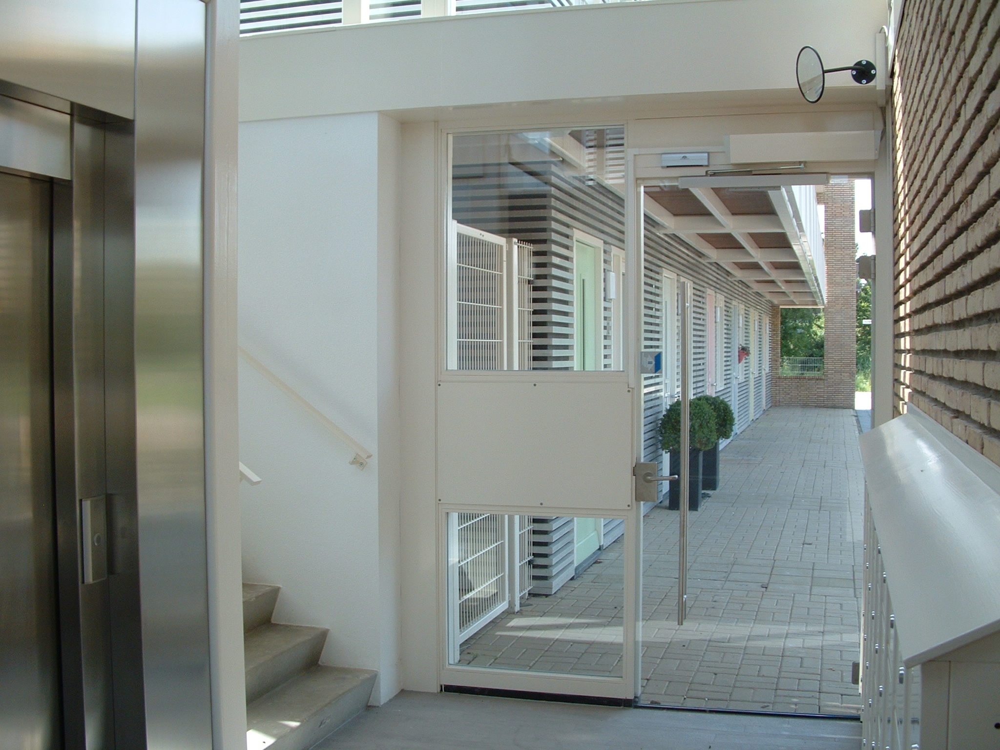
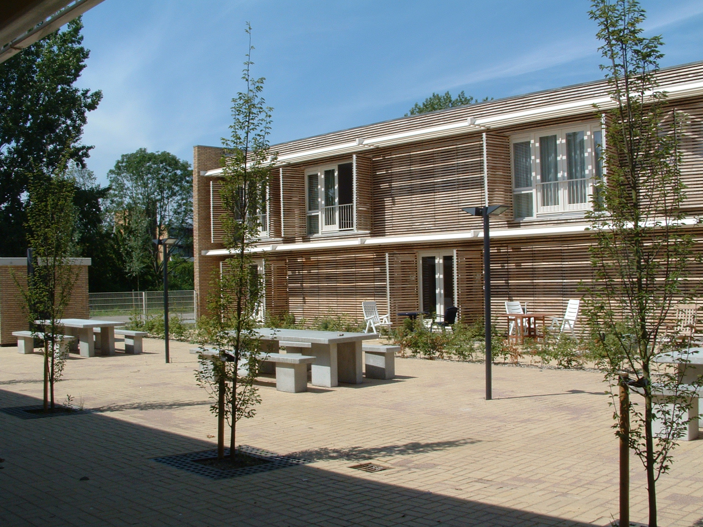

<%@ Page Title="" Language="C#" MasterPageFile="~/BagSite.Master" AutoEventWireup="true" CodeBehind="Starterswoningen.aspx.cs" Inherits="website.Starterswoningen" %>
<asp:Content ID="Content1" ContentPlaceHolderID="ContentPlaceHolder1" runat="server">
      <!-- page-banner-section 
			================================================== -->
		 <section class="page-banner-section" style="background: #111 url('/upload/portfolio/Starterswoningen/DSCF9671.JPG') center center; padding: 200px 0 150px; background-size: cover; text-align: center;  ">
        <%----%>
        <div class="container">
            <h1>Starterswoningen Amstelveen</h1>
        </div>
    </section>
		<!-- End banner section -->

		<!-- content-section 
			================================================== -->
		<section id="content-section">
			<div class="container">
						
				<!-- single-project -->
				<div class="single-project">
					<div class="row">
						<div class="col-md-6 col-lg-7">
                            
                            
                            
                            
                            
                            
                            
                            
                            
                            

						</div>
						<div class="col-md-6 col-lg-5">
							<div class="project-details">
								<p>
Door B.A.G. zijn 96 starterswoningen ontwikkeld op basis van MGE (maatschappelijk gebonden eigendom)
Hierdoor is wonen in Amstelveen bereikbaar geworden voor een grote groep mensen die maatschappelijk gebonden zijn aan Amstelveen. Docenten, brandweerlieden, verpleegsters etc.
Kwalitatief hoogwaardige woningen met een zuidorientatie, een heldere uitstraling en een eigen identiteit die tot uitdrukking komt in de kleur van de voordeuren.</p>
								<div class="project-list-box">
									
								</div>
								<div class="share-box">
								
								</div>
							</div>
						</div>
					</div>

				</div>
				<!-- End single-project -->

			</div>
		</section>
		<!-- End content section -->


</asp:Content>
